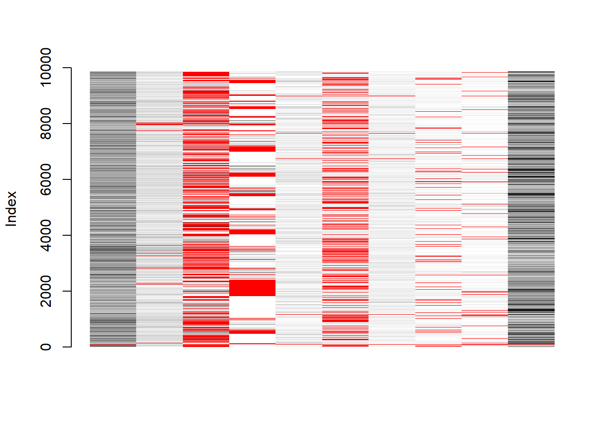
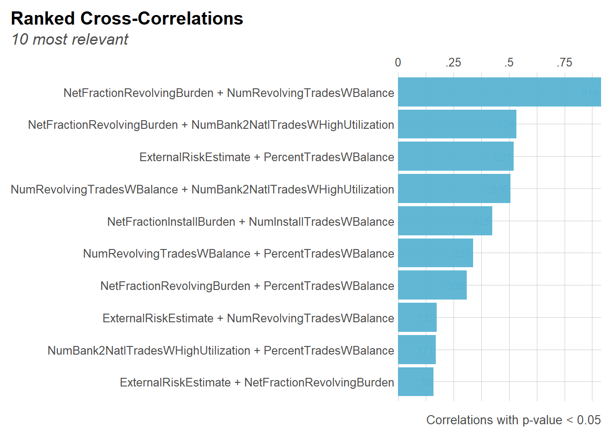

Last updated: 2022-04-28
Checks: 7 0
Knit directory: Interpretable-ML-Models/
This reproducible R Markdown analysis was created with workflowr (version 1.7.0). The Checks tab describes the reproducibility checks that were applied when the results were created. The Past versions tab lists the development history.
Great! Since the R Markdown file has been committed to the Git repository, you know the exact version of the code that produced these results.
Great job! The global environment was empty. Objects defined in the global environment can affect the analysis in your R Markdown file in unknown ways. For reproduciblity it’s best to always run the code in an empty environment.
The command set.seed(20220121) was run prior to running the code in the R Markdown file. Setting a seed ensures that any results that rely on randomness, e.g. subsampling or permutations, are reproducible.
Great job! Recording the operating system, R version, and package versions is critical for reproducibility.
Nice! There were no cached chunks for this analysis, so you can be confident that you successfully produced the results during this run.
Great job! Using relative paths to the files within your workflowr project makes it easier to run your code on other machines.
Great! You are using Git for version control. Tracking code development and connecting the code version to the results is critical for reproducibility.
The results in this page were generated with repository version 1107883. See the Past versions tab to see a history of the changes made to the R Markdown and HTML files.
Note that you need to be careful to ensure that all relevant files for the analysis have been committed to Git prior to generating the results (you can use wflow_publish or wflow_git_commit). workflowr only checks the R Markdown file, but you know if there are other scripts or data files that it depends on. Below is the status of the Git repository when the results were generated:
Ignored files:
Ignored: .Rhistory
Ignored: .Rproj.user/
Ignored: analysis/.Rhistory
Untracked files:
Untracked: analysis/AIX360.Rmd
Untracked: analysis/Harvard.csl
Untracked: analysis/style.css
Untracked: code/.ipynb_checkpoints/
Untracked: code/AIX360-rstudio.Rmd
Untracked: code/AIX_360_Credit_Data_Scientist.html
Untracked: code/AIX_360_Credit_Data_Scientist.ipynb
Untracked: code/AIX_360_Credit_Data_Scientist.zip
Untracked: code/AIX_360_Credit_Data_Scientist/
Untracked: code/AIX_360_Credit_Loan_Data_Scientist.ipynb
Untracked: code/aix_360_credit_loan_data_scientist.py
Unstaged changes:
Modified: analysis/_site.yml
Deleted: analysis/about.Rmd
Note that any generated files, e.g. HTML, png, CSS, etc., are not included in this status report because it is ok for generated content to have uncommitted changes.
These are the previous versions of the repository in which changes were made to the R Markdown (analysis/HELOC-data-dictionary.Rmd) and HTML (docs/HELOC-data-dictionary.html) files. If you’ve configured a remote Git repository (see ?wflow_git_remote), click on the hyperlinks in the table below to view the files as they were in that past version.
| File | Version | Author | Date | Message |
|---|---|---|---|---|
| html | 1107883 | JJCoen | 2022-04-27 | Build site. |
| html | a572aaf | JJCoen | 2022-04-27 | Build site. |
| html | 637b308 | JJCoen | 2022-04-23 | Build site. |
| html | dbfde2b | JJCoen | 2022-04-23 | Build site. |
| html | 1bb7638 | JJCoen | 2022-03-21 | Build site. |
| html | 0f94b72 | JJCoen | 2022-03-12 | Build site. |
| html | 53ea23f | JJCoen | 2022-03-02 | Build site. |
| html | 2536ed2 | JJCoen | 2022-03-01 | Build site. |
| html | c3653e5 | JJCoen | 2022-03-01 | Build site. |
| Rmd | 0d72957 | JJCoen | 2022-03-01 | include Data Dictionary |
| html | 114b05e | JJCoen | 2022-03-01 | add missForest |
The dataset contains annonyised attributes of actual loan applications to banks by homeowners. Credit is extended to an borrower based upon the equity in their home, that is, the difference between the current market value and the purchase price of the home. Borrowers request loans in the range of \$5,000 to \$150,000.
It is standard practice in Credit Risk Modelling to record two types of features. Application data consists of details about a loan application itself. And behavioural information contains data related to the financial circumstances of a loan applicant.
The HELOC data-set only has application data. Features are transaction-related (such as credit exposure) or account-related (days past due, account tenure, delinquincy).
In 2018, Fair Isaac Corporation (FICO) created the HELOC dataset from real-world home equity loan applications. It is the source data for the FICO Explainable Machine Learning Challenge. This challenge is sponsored by FICO, Google, Imperial College London, MIT, University of Oxford, UC Irvine and UC Berkeley.
There are problems with missing values.
- It negatively impacts machine learning accuracy.
- A model may interpret NA values as defaults which can lead to bias. Such a model could become unstable.
- For some ML models, a NA value for a numeric or character variable raises an error.
Features containing data about delinquency are coded to numeric scale and missing values are labeled with negative integer number.
Data is organised as a csv file containing 24 columns and 10,459 rows for each loan application. Apart from the target variable, RiskPerformance, all 23 feature variables are numeric. Of the 10,459 observations, 5,000 had a RiskPerformance of “Good” which means they had paid back loans within 2 years. The remaining 5,459 are classified as “Bad”.
Descriptions for column headers comes from work carried out by the University of Warsaw and the Warsaw University of Technology (Kurzelewski and Radzikowski, 2020).
RiskPerformance = “Good”: These are customers that are unlikely to default on loan payments. Not approving a loan, due to miss-classification, results in lost business to the bank.
RiskPerformance = “Bad”: These are customers that were 90 days past due or worse at least once over a period of 24 months from when the credit account was opened.. Approving a loan, due to miss-classification, results in loss of capital to the bank.
Bad Good
5459 5000 This is a balanced dataset with about the same number of observations in each target class.
ExternalRiskEstimate - consolidated indicator of risk markers (equivalent of polish BIK’s rate)
MSinceOldestTradeOpen - number of months that have elapsed since first trade
MSinceMostRecentTradeOpen - number of months that have elapsed since last opened trade
AverageMInFile - average months in file
NumSatisfactoryTrades - number of satisfactory trades
NumTrades60Ever2DerogPubRec - number of trades which are more than 60 past due
NumTrades90Ever2DerogPubRec - number of trades which are more than 90 past due
PercentTradesNeverDelq - percent of trades, that were not delinquent
MSinceMostRecentDelq - number of months that have elapsed since last delinquent trade
MaxDelq2PublicRecLast12M - the longest delinquency period in last 12 months
MaxDelqEver - the longest delinquency period
NumTotalTrades - total number of trades
NumTradesOpeninLast12M - number of trades opened in last 12 months
PercentInstallTrades - percent of installments trades
MSinceMostRecentInqexcl7days - months since last inquiry (excluding last 7 days)
NumInqLast6M - number of inquiries in last 6 months
NumInqLast6Mexcl7days - number of inquiries in last 6 months (excluding last 7 days)
NetFractionRevolvingBurden - revolving balance divided by credit limit
NetFractionInstallBurden - installment balance divided by original loan amount
NumRevolvingTradesWBalance - number of revolving trades with balance
NumInstallTradesWBalance - number of installment trades with balance
NumBank2NatlTradesWHighUtilization - number of trades with high utilization ratio (credit utilization ratio - the amount of a credit card balance compared to the credit limit)
PercentTradesWBalance - percent of trades with balance
A negative numeric indicates a missing value. Remove rows with all missing values
[1] 588588 rows, that had all negative values, were removed
Loading required package: colorspaceLoading required package: gridVIM is ready to use.Suggestions and bug-reports can be submitted at: https://github.com/statistikat/VIM/issues
Attaching package: 'VIM'The following object is masked from 'package:datasets':
sleep [1] "ExternalRiskEstimate" "MSinceOldestTradeOpen"
[3] "MSinceMostRecentDelq" "MSinceMostRecentInqexcl7days"
[5] "NetFractionRevolvingBurden" "NetFractionInstallBurden"
[7] "NumRevolvingTradesWBalance" "NumInstallTradesWBalance"
[9] "NumBank2NatlTradesWHighUtilization" "PercentTradesWBalance" 
Columns 3, 4, 6, and 8 have most missing values
“MSinceMostRecentDelq”, “MSinceMostRecentInqexcl7days”, and “NetFractionInstallBurden”
ExternalRiskEstimate MSinceOldestTradeOpen MSinceMostRecentDelq
1 0 0 0
2 0 0 1
3 0 0 1
4 0 0 0
5 0 0 1
MSinceMostRecentInqexcl7days NetFractionRevolvingBurden
1 0 0
2 0 0
3 0 0
4 0 0
5 0 0
NetFractionInstallBurden NumRevolvingTradesWBalance NumInstallTradesWBalance
1 1 0 0
2 1 0 1
3 0 0 0
4 0 0 0
5 0 0 0
NumBank2NatlTradesWHighUtilization PercentTradesWBalance
1 0 0
2 1 0
3 0 0
4 0 0
5 0 0Plot correlations between variables with missing values, ranked by r value.
Returning only the top 10. You may override with the 'top' argumentWarning in .font_global(font, quiet = FALSE): Font 'Arial Narrow' is not
installed, has other name, or can't be found
NetFractionRevolvingBurden and NumRevolvingTradesWBalance have highest correlation for missing values. This is due to absence of data on the revolving balance.
missForest package for imputationSimilar to other imputation methods, it uses predictive mean matching. This calculates the predicted mean for each observation. It then imputes using the observed value for the instance with the predicted mean that is the closest match to the missing instance.
Functionality unique to mi includes:
Warning: Formatting options are now in print() or as function arguments in
skim_with().| skim_variable | mean | sd | p0 | p50 | p100 |
|---|---|---|---|---|---|
| ExternalRiskEstimate | 72.06 | 9.87 | 33 | 72 | 94 |
| MSinceOldestTradeOpen | 200.77 | 97.95 | 2 | 186 | 803 |
| MSinceMostRecentTradeOpen | 9.59 | 12.96 | 0 | 6 | 383 |
| AverageMInFile | 78.78 | 34.07 | 4 | 76 | 383 |
| NumSatisfactoryTrades | 21.12 | 11.32 | 0 | 20 | 79 |
| NumTrades60Ever2DerogPubRec | 0.58 | 1.24 | 0 | 0 | 19 |
| NumTrades90Ever2DerogPubRec | 0.38 | 0.99 | 0 | 0 | 19 |
| PercentTradesNeverDelq | 92.36 | 11.77 | 0 | 97 | 100 |
| MSinceMostRecentDelq | 21.88 | 20.81 | 0 | 15 | 83 |
| MaxDelq2PublicRecLast12M | 5.76 | 1.64 | 0 | 6 | 9 |
| MaxDelqEver | 6.37 | 1.85 | 2 | 6 | 8 |
| NumTotalTrades | 22.64 | 13.00 | 0 | 21 | 104 |
| NumTradesOpeninLast12M | 1.86 | 1.83 | 0 | 1 | 19 |
| PercentInstallTrades | 34.62 | 17.95 | 0 | 33 | 100 |
| MSinceMostRecentInqexcl7days | 2.48 | 4.76 | 0 | 0 | 24 |
| NumInqLast6M | 1.46 | 2.14 | 0 | 1 | 66 |
| NumInqLast6Mexcl7days | 1.40 | 2.10 | 0 | 1 | 66 |
| NetFractionRevolvingBurden | 34.86 | 28.90 | 0 | 29 | 232 |
| NetFractionInstallBurden | 68.54 | 24.90 | 0 | 74 | 471 |
| NumRevolvingTradesWBalance | 4.10 | 3.02 | 0 | 3 | 32 |
| NumInstallTradesWBalance | 2.48 | 1.63 | 1 | 2 | 23 |
| NumBank2NatlTradesWHighUtilization | 1.09 | 1.54 | 0 | 1 | 18 |
| PercentTradesWBalance | 66.45 | 22.04 | 0 | 67 | 100 |
R version 4.1.2 (2021-11-01)
Platform: x86_64-w64-mingw32/x64 (64-bit)
Running under: Windows 10 x64 (build 22000)
Matrix products: default
locale:
[1] LC_COLLATE=English_United States.1252
[2] LC_CTYPE=English_United States.1252
[3] LC_MONETARY=English_United States.1252
[4] LC_NUMERIC=C
[5] LC_TIME=English_United States.1252
attached base packages:
[1] grid stats graphics grDevices utils datasets methods
[8] base
other attached packages:
[1] skimr_2.1.3 lares_5.0.6 VIM_6.1.1 colorspace_2.0-3
[5] kableExtra_1.3.4 data.table_1.14.2 purrr_0.3.4 dplyr_1.0.8
[9] ggplot2_3.3.5 workflowr_1.7.0
loaded via a namespace (and not attached):
[1] bitops_1.0-7 fs_1.5.2 lubridate_1.8.0 webshot_0.5.2
[5] httr_1.4.2 rprojroot_2.0.2 repr_1.1.4 tools_4.1.2
[9] bslib_0.3.1 utf8_1.2.2 R6_2.5.1 rpart_4.1-15
[13] DBI_1.1.2 nnet_7.3-17 withr_2.4.3 sp_1.4-6
[17] tidyselect_1.1.2 processx_3.5.2 compiler_4.1.2 git2r_0.29.0
[21] cli_3.2.0 rvest_1.0.2 xml2_1.3.3 labeling_0.4.2
[25] sass_0.4.0 scales_1.1.1 lmtest_0.9-39 DEoptimR_1.0-10
[29] robustbase_0.93-9 callr_3.7.0 proxy_0.4-26 systemfonts_1.0.4
[33] stringr_1.4.0 digest_0.6.29 rmarkdown_2.11 svglite_2.1.0
[37] base64enc_0.1-3 pkgconfig_2.0.3 htmltools_0.5.2 fastmap_1.1.0
[41] highr_0.9 rlang_1.0.1 rstudioapi_0.13 farver_2.1.0
[45] jquerylib_0.1.4 generics_0.1.2 zoo_1.8-9 jsonlite_1.7.3
[49] zip_2.2.0 car_3.0-12 RCurl_1.98-1.6 magrittr_2.0.2
[53] patchwork_1.1.1 Matrix_1.4-0 Rcpp_1.0.8 munsell_0.5.0
[57] fansi_1.0.2 abind_1.4-5 lifecycle_1.0.1 stringi_1.7.6
[61] whisker_0.4 pROC_1.18.0 yaml_2.3.5 carData_3.0-5
[65] MASS_7.3-55 plyr_1.8.6 promises_1.2.0.1 crayon_1.5.0
[69] lattice_0.20-45 knitr_1.37 ps_1.6.0 pillar_1.7.0
[73] ranger_0.13.1 boot_1.3-28 glue_1.6.1 evaluate_0.15
[77] getPass_0.2-2 rpart.plot_3.1.0 laeken_0.5.2 vcd_1.4-9
[81] vctrs_0.3.8 httpuv_1.6.5 tidyr_1.2.0 gtable_0.3.0
[85] assertthat_0.2.1 xfun_0.29 openxlsx_4.2.5 h2o_3.36.0.3
[89] e1071_1.7-9 later_1.3.0 class_7.3-20 viridisLite_0.4.0
[93] tibble_3.1.6 ellipsis_0.3.2